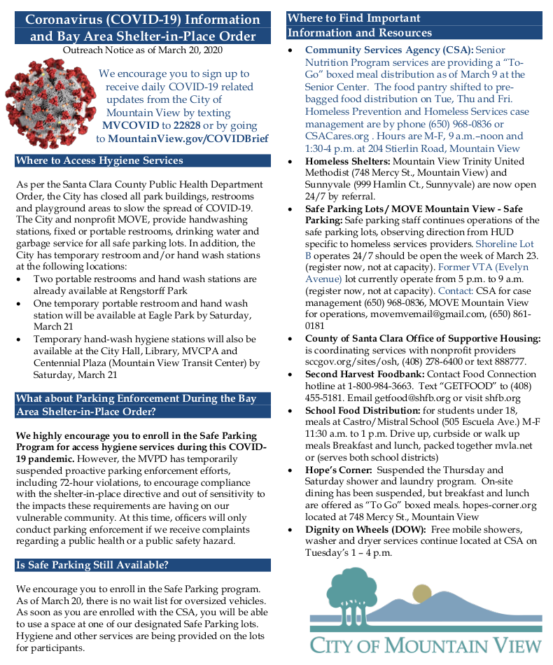
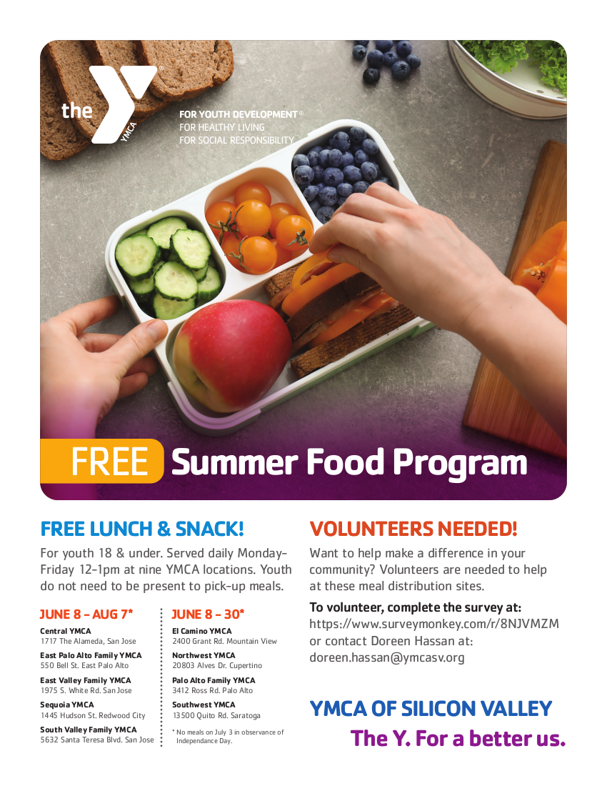

<section>
    <div class="row">
		<div class="columns small-12 hide-for-medium">
			{% include coronavirus_menu.html %}
		</div>
		<div class="left-subnav medium-3 columns hide-for-small-only" data-sticky-container>
			<nav class="columns sticky" data-sticky data-top-anchor="top" data-btm-anchor="news" data-sticky-on="medium">
				<div id='nav-magellan' data-magellan>
					{% include coronavirus_menu.html %}
				</div>
			</nav>
		</div>
      <div id="top" data-magellan-target="top" class="large-9 columns">
		<h1>COVID-19 Information and Resources</h1>
		<p>Last Updated 9/6/2020</p>

      <h4 id="eviction" data-magellan-target="eviction">Eviction Moratorium</h4>
	  <div class="inner">
	  <p>In August, the Mountain View City Council extended and strengthened the eviction moratorium. The eviction moratorium will now protect renters who are economically impacted by COVID-19 for the next several months, aligning with Santa Clara County’s eviction moratorium. Previously, the City’s eviction moratorium was scheduled to end on Monday, August 31. </p>
	  <p>The most significant changes include the following: 
	  <ul>
	  <li>Extension of the eviction moratorium to align with the County. </li>
	  <li>Increase the repayment period to align with the County. Full repayment of back rent is now required within 12 months of the expiration of the moratorium, with at least 50% due at 6 months following the expiration. (Previously, full repayment was required 180 days following the expiration of the moratorium.) </li>
	  <li>Allocation of an additional $100,000 to CSA for the rent relief program.</li>
	  </ul>
	  </p>
	  <p>To sign up to receive email updates regarding the eviction moratorium or the City’s rent stabilization program, email <a href="mailto:Andrea.Kennedy@mountainview.gov" target ="_blank">Andrea.Kennedy@mountainview.gov</a>. This is the best way to learn about upcoming webinars and informational sessions for tenants and rental property owners. </p>
	  <p>If you need help, or for more information regarding the eviction moratorium, call the Mountain View Rental Housing Helpline at (650) 282-2514 or email <a href="mailto:csfra@housing.org" target="_blank">csfra@housing.org</a>. </p>
	  <p>Updates regarding the eviction moratorium are posted on the <a href="https://www.mountainview.gov/depts/comdev/preservation/rentstabilization/evictionmoratorium/default.asp" target="_blank">City’s website</a> frequently, and the changes approved by the Council will be added soon. </p>
	  <p><b>The County also passed an <a href="https://tinyurl.com/u3ru6m8" target="_blank">evicition moratorium</a>. 
	  If a tenant lives in Santa Clara County and receives any kind of eviction notice during the COVID-19 emergency, they can call the Law Foundation of Silicon Valley at 408-280-2424 for more information about their rights. <a href="https://tinyurl.com/u3ru6m8" target="_blank">View Santa Clara County eviction moratorium</a></p>
	  <p>View <a href="https://siliconvalleyathome.org" target="_blank">SV@Home</a>'s Q&A livestream recording about the eviction moratorium in <a href="https://business.facebook.com/siliconvalleyathome/videos/2511237275859612" target="_blank">English</a>, <a href="https://business.facebook.com/siliconvalleyathome/videos/219773005901057" target="_blank">Spanish</a> or <a href="https://business.facebook.com/siliconvalleyathome/videos/203883230916404" target="_blank">Vietnamese</a>. </p>
	  <p>The Law Foundation has some great FAQ’ on the Santa Clara County COVID-19 Eviction Moratorium. Including a Template a Tenant can use with their landlord notify them of their lost income related to the COVID-19 virus and inability to pay rent. <br>
	  <a href="https://static1.squarespace.com/static/577c8338bebafbe36dfc1691/t/5e7cf8c4ad724f2d67857f95/1585248453139/FAQs_Santa+Clara+County_Eviction+Moratorium_English.pdf" target="_blank">English FAQ</a> | <a href="https://static1.squarespace.com/static/577c8338bebafbe36dfc1691/t/5e7cf8c8cc89f85fe24849d5/1585248457421/FAQs-Santa+Clara+County_Eviction+Moratorium_Spanish.pdf" target="_blank">Spanish FAQ</a> | <a href="https://static1.squarespace.com/static/577c8338bebafbe36dfc1691/t/5e7cf8ceaf657c5185d363b6/1585248462985/FAQs-Santa+Clara+County_Eviction+Moratorium_Vietnamese.pdf" target="_blank">Vietnamese FAQ</a> | <a href="https://drive.google.com/file/d/19aAFgSu4AzUG5D5kRhwuk1aB163pCjyL/view" target="_blank">Template Letter to Landlords</a> </p>
	  <p>More renter resources</p>
	  <ul>
	  <li><a href="#rent">Rent Assistance</a></li>
	  <li><a href="https://www.mountainview.gov/depts/comdev/preservation/rentstabilization/default.asp" target="_blank">Mountain View Rent Stabilization Program</a></li>
	  <li><a href="https://www.mountainview.gov/civicax/filebank/blobdload.aspx?BlobID=32122" target="_blank">COVID-19 Pandemic Eviction Relief Factsheet</a> </li>
	  <li><a href="https://www.mountainview.gov/civicax/filebank/blobdload.aspx?BlobID=32114" target="_blank">Eviction Moratorium FAQ</a> </li>
	  <li><a href="https://www.youtube.com/watch?v=QE1ZBnUC5TY" target="_blank">Evicition Relief Outrech Video</a> </li>
	  <li><a href="https://www.mountainview.gov/depts/comdev/preservation/mediationprogram.asp" target="_blank">Mountain View Mediation Program to assist landlords and tenants negotiate rent repayment (free and confidential) </a></li>
	  <li><a href="https://siliconvalleyathome.org/covid-resource/renter-protections" target="_blank">SV@Home Tenant Resource Guide</a></li>
	  <li><a href="https://www.lawfoundation.org/coronavirus" target="_blank">Silicon Valley Law Foundation Tenant Resource Guide</a></li>
	  <li><a href="https://docs.google.com/document/d/1G-n_wK1JXuNHc2drqFjq3JdY-8ILG343zvbM5q8Ykx8/edit?usp=sharing" target="_blank">Tenants Together Resource Guide</a></li>
	  </ul></p>

	  <div align="right"><p><a href="#top">Back to top </a></p></div>
	  </div>
	  <hr>
 
     <h4 id="shelter" data-magellan-target="shelter">Shelter-in-Place Order</h4>
	  <div class="inner">
	  <p>On March 17, the Public Health department of Santa Clara County madated a Shelter-in-Place order in response to the COVID-19 pandemic. Over the course of the past few months, this order has been adapting to new information. </p>
	  <p><a href="https://www.sccgov.org/sites/covid19/Pages/public-health-orders.aspx" target="_blank">View the current shelter in place orders</a></p>
	  <p>For the latest update from the County of Santa Clara ​Public Health Department, go to: <a href="https://www.sccgov.org/sites/scc/Documents/home.html" target="_blank">www.sccphd.org/coronavirus</a>. </p>
	  <p>For local emergencies, click the following link to sign up for text messages: <a href="https://www.sccgov.org/sites/oes/alertscc/Pages/home.aspx" target="_blank">sccgov.org/sites/oes/alertscc/Pages/home.aspx</a>. The alerts do not provide as much information as can be found generally on the Public Health website, or as much information as is provided on our COVID-19 response FAQ: <a href="https://www.sccgov.org/sites/phd/DiseaseInformation/novel-coronavirus/Pages/home.aspx" target="_blank">www.sccphd.org/CV19</a>.
	  <p>If you have additional questions or concerns, please call 2-1-1, then press 4 for “community services”. </p>
	  <p>Follow on social media: <br>County of Santa Clara ​Public Health Department Facebook: <a href="https://facebook.com/sccpublichealth" target="_blank">facebook.com/sccpublichealth</a> <br>County of Santa Clara ​Public Health Department Twitter: <a href="https://twitter.com/HealthySCC" target="_blank">twitter.com/HealthySCC</a></p>
	  <p>More data can be found through the Public Health Department’s <a href="https://www.sccgov.org/sites/phd/DiseaseInformation/novel-coronavirus/Pages/dashboard.aspx" target="_blank">Data Dashboards</a>. </p>
	  <div align="right"><p><a href="#top">Back to top </a></p></div>
	  </div>
	  <hr>	

      <h4 id="city" data-magellan-target="city">City of Mountain View Updates</h4>
	  <div class="inner">
	  <p>The City of Mountain View continues to respond rapidly and aggressively to the COVID-19 pandemic and mitigate the economic impacts on residents and businesses. The City provides a helpful email with updates called The Briefing. Please sign up by texting ‘MVCOVID’ to 22828.</p>
	  <p>Latest Issue: <a href="https://spark.adobe.com/page/YgH90NUPJNpFM/" target="_blank">August 20 - Volume 47 </a> 	  
	  <p>Follow the City of Mountain View for more up to date information relating to COVID-19. <br><a href="http://mountainview.gov/virus" target="_blank">COVID-19 Website</a> - <a href="http://twitter.mountainview.gov/" target="_blank">Twitter</a> - <a href="http://facebook.mountainview.gov/" target="_blank">Facebook</a> - <a href="http://mountainview.gov/Instagram" target="_blank">Instagram</a> - <a href="http://mountainview.gov/YouTube" target="_blank">YouTube</a> </p>
	  <div align="right"><p><a href="#top">Back to top </a></p></div>
	  </div>
	  <hr>	
	  
      <h4 id="state" data-magellan-target="state">Other Agency Updates</h4>
	  <div class="inner">
	  <p>
	  <ul>
	  <li><a href="https://covid19.ca.gov/" target="_blank">View updates from the state</a></li>
	  <li><a href="https://a24.asmdc.org/covid-19" target="_blank">View updates from Assemblymember Marc Berman (Assembly District 24)</a></li>
	  </ul>
	  </p>
	  <p><b>Caltrain Updates </b></p>
	  <p>Caltrain to Implement Additional Weekday Service Reductions </p>
	  <p>Due to significant reductions in ridership resulting from the coronavirus (COVID-19) pandemic, Caltrain will further reduce weekday train service indefinitely starting Monday, March 30. </p>
	  <p>The modified weekday schedule will operate 42 trains per day, rather than the usual 92. Trains will make all local weekday stops between San Jose and San Francisco every 30-60 minutes, depending on time of day. Caltrain will continue operating two Gilroy service trains during the morning and afternoon peak commute. Limited and Baby Bullet service will be suspended until further notice. </p>
	  <p>The updated weekday schedule will be available at <a href="http://www.caltrain.com/" target="_blank">www.caltrain.com</a>. </p>
	  <p>Weekend service will continue to operate normally. </p>
	  <p>These additional schedule reductions are necessary to mitigate severe fare revenue losses while still providing essential transit services to all stations along Caltrain’s corridor. Caltrain is monitoring ridership during this time and may implement additional service changes as needed while ensuring that riders can maintain social distancing in accordance with the Centers for Disease Control and Prevention (CDC) <a href="https://www.cdc.gov/coronavirus/2019-ncov/prepare/prevention.html" target="_blank">recommendations</a>. Caltrain continues to maintain daily onboard cleaning and sanitation protocols in compliance with Environmental Protection Agency (EPA) guidelines. </p>
	  <p>Caltrain is assessing the impact that reduced ridership is having on the agency’s ability to maintain operations in the coming months. One-way and Day Pass ticket sales have declined by approximately 86% from levels prior to the current health crisis. On the first day of the Bay Area-wide Public Health Order, Caltrain recorded a 95% decrease in average daily ticket sales. With no other dedicated source of funding, Caltrain relies on fares to cover 70% of the system’s operating costs. </p>
	  <p>Due to severe ridership declines as a result of the public health order, transit agencies, like Caltrain, are now experiencing serious financial challenges. Federal legislation has been approved that could provide transit agencies throughout the country with funding to maintain operations. Caltrain is working with the Metropolitan Transportation Commission to determine how those funds will be allocated throughout the Bay Area. </p>
	  <p>For more information about Caltrain schedules and fares or for help planning your trip, call Caltrain Customer Service at 1.800.660.4287 (TTY 650.508.6448) or visit <a href="http://www.caltrain.com/" target="_blank">www.caltrain.com</a>. </p>
	  <p><b>VTA Updates</b></p>
	  <p><a href="pdf/vtaupdate03212020.pdf" target="_blank">Update for the week of March 21, 2020</a></p>
	  <p>Effective March 26, <a href="https://www.vta.org/blog/vta-operator-trainee-tests-positive-covid-19-light-rail-service-suspended" target="_blank">VTA will be suspending Light Rail Service</a>.</p>
	  <p>VTA will suspend <a href="https://www.vta.org/go/routes/school-trippers" target="_blank">school trip service</a>. <b>This will take effect on Monday, March 16</b>. </p>
	  <p>To receive real-time service alerts, you can <a href="https://help.transit.app/article/96-get-notifications-about-disruptions-on-your-line" target="_blank">subscribe to your routes in the Transit app</a>. </p>
	  <p>We will continue to analyze ridership data to identify trends and will be making decisions on whether a change in the level of service is warranted and to what degree. This will be a large area of focus for VTA going forward to ensure we are responding appropriately to match our resources with the most effective level of service.</p>
	  <p>VTA continues to monitor the situation closely and maintains regular contact with local authorities and other transit agencies. For more on what VTA is doing in response to COVID-19, please visit <a href="https://www.vta.org/covid-19" target="_blank">https://www.vta.org/covid-19</a>. </p> 
	  <p>The <b>Mountain View Community Shuttle</b> is still running during the "Shelter-in-Place." <a href="http://mvcommunityshuttle.com/" target="_blank">View Schedule</a>.</p>
	  <div align="right"><p><a href="#top">Back to top </a></p></div>
	  </div>
	  <hr>	

      <h4 id="rent" data-magellan-target="rent">Rent Relief</h4>
	  <div class="inner">
	  <center></center>
	  <p>For rental assistance, please call 650.968.0836 and leave a voicemail or email <a href="mailto:RentHelp@csacares.org" target="_blank">RentHelp@csacares.org</a>. Please state your name and number and indicate that you need rental assistance. A Community Services Agency (CSA), staff member will return your call within 72 business hours.</p>
	  <p>A CSA staff member will conduct a telephone screening to determine your eligibility and how to best financially assist you. </p>
	  <p>Rental Assistance Program through City of Mountain View Grant<br>
	  <ul>
	  <li>Mountain View residents only (multiple months)</li>
	  <li>Proof of Mountain View Residency </li>
	  <li>Up to 120% AMI households </li>
	  <li>Proof of income (paystubs, bank statement, letter from employer) </li>
	  <li>Proof of loss of income (after 3/17/2020) </li>
	  </ul>
	  The rent relief package offered by the City of Mountain View is now active and ready for renters in need. To apply, either call our mainline at 650-968-0836 or email RentHelp@csacares.org. Please leave your name and phone number and a Case Manager will call you within 72 hours to assist you.</p>
	  <p>If the caller meets all City of Mountain View requirements, they can pick up a rental assistance packet outside of CSA, 204 Stierlin Rd. Mountain View, CA 94043. M-F during business hours, 9:00a-4:00p. The individual must submit all paperwork via email/text to the assigned CSA staff member, so their rental assistance request can be processed through CSA. </p> 
	  <p>Please call CSA at 650.968.0836 or email <a href="mailto:RentHelp@csacares.org" target="_blank">RentHelp@csacares.org</a> for a rental screening. CSA may be able to provide financial assistance through other funding sources. </p>
	  <p>Santa Clara County Board of Supervisors approved a temporary COVID-19 Temporary Moratorium on Evictions, on Tuesday, 03.24.2020 until 05.31.2020. If you need a legal referral for tenants and/or have any additional questions or concerns about rental assistance, please call Eonis Cibrian Pelayo, Community and Public Relations Coordinator, at 650.669.9551 or email <a href="mailto:ecibrianpelayo@csacares.org" target="_blank">ecibrianpelayo@csacares.org</a>. </p>
	  <p>They are experiencing a high volume of calls and emails. Please be patient with CSA staff, they will get back to you. </p>
	  <p>View flyer in <a href="pdf/csarent.pdf" target="_blank">English</a> or <a href="pdf/csarentsp.pdf" target="_blank">Spanish</a>. </p>
	  <p>View FAQs in <a href="pdf/csafaqeng.pdf" target="_ blank">English</a> or <a href="pdf/csafaqspa.pdf" target="_blank">Spanish</a> </p>
	  <p>CSA will be making other temporary changes to their programs. View changes in <a href="pdf/csa-updated.pdf" target="_blank">English</a> or <a href="pdf/csa-updatedspa.pdf" target="_blank">Spanish</a>.<br>For more information: (650) 968-0836. </p> 
		<div class="large-6 columns"><a href="pdf/COVID19RentReliefProgramEng.pdf" target="_blank"></a></div>
		<div class="large-6 columns"><a href="pdf/COVID19RentReliefProgramSpa.pdf" target="_blank"></a></div>
	  <p>CSA is offering a free webinar in regards to their rental assistance process in response to COVID-19. This webinar is open to the general community of Mountain View, Los Altos, and Los Altos Hills. For English, webinars are scheduled on Tuesdays, 5/12, 5/19, and 5/26. For Spanish, webinars are scheduled on Thursdays, 5/14, 5/21, and 5/28. Registration required, please email Eonis Cibrian Pelayo at <a href="mailto:ecibrianpelayo@csacares.org" target="_blank">ecibrianpelayo@csacares.org</a> to sign up.</p>
	  <div align="right"><p><a href="#top">Back to top </a></p></div>
	  </div>
	  <hr>	

      <h4 id="utility" data-magellan-target="utility">Utility Assistance</h4>
	  <div class="inner">
	  <p>The City of Mountain View's utility relief program is now online. The income limits for applying are shown below.  If you need help with your utility bill, please fill out the application and attach a copy of your most recent utility bill as soon as you can. </p>
	  <p>Utility Bill Assistance Program Application: <a href="https://www.mountainview.gov/civicax/filebank/blobdload.aspx?BlobID=32256" target="_blank">https://www.mountainview.gov/civicax/filebank/blobdload.aspx?BlobID=32256</a> </p>
	  <p>These funds are based on first come, first serve up to 2,000 applicants. </p>
	  <p>You may mail the completed application to City Hall (P.O. Box 7540, Mountain View CA, 94041). You can also drop the application off at the drop box located in the front of City Hall - facing the courtyard. City staff check this drop box Monday through Friday, every morning at 8am. Each qualified applicant will receive a $50 credit towards their next utility statement.  If you have any questions contact: revenuestaff@mountainview.gov or call 650-903-6317  </p>
	  <div align="right"><p><a href="#top">Back to top </a></p></div>
	  </div>
	  <hr>	

      <h4 id="worker" data-magellan-target="worker">Worker Assistance</h4>
	  <div class="inner">
	  <p>One-stop resource for the people of California impacted by job loss during the COVID-19 Pandemic. </p>
	  <p>Losing your job amidst a pandemic is traumatic. OnwardCA is a resource that has been rapidly deployed by a broad coalition of companies, foundations, and humans who want to help. Help you get money or groceries or child care; help you upskill, reskill, or refresh; and help you land a great new job. <a href="https://onwardca.org/" target="_blank">View more information</a>.</p>
	  <p><b><a href="https://www.edd.ca.gov/Unemployment/Partial_Claims.htm" target="_blank">California Employment Development Department</a></b> </p>
	  <p>Partial Claims</p>
	  <p>Partial claims are for employees whose employers want to keep them when there is a lack of work. </p>
	  <p><br>Source: <a href="https://www.labor.ca.gov/coronavirus2019/" target="_blank">California Labor and Workforce Development Agency</a></p>
	  <p>If you have any questions or doubts, please call the Office of Labor Standards Enforcement (OLSE) at 1-866-870-7725. The advice line is available in 5 different languages: English, Spanish, Tagalog, Mandarin, and Vietnamese.</p>
	  <p>Información de los derechos del trabajador en respeto al COVID-19, si tiene alguna pregunta o duda por favor póngase en contacto con la Oficina de Derechos del Trabajador (OLSE en ingles) al 1-866-870-7725. La linea de consejo tiene 5 Idiomas diferentes en; español, ingles, tagalog, mandarin, y vietnamita.</p>
	  <div align="right"><p><a href="#top">Back to top </a></p></div>
	  </div>
	  <hr>	

      <h4 id="navigation" data-magellan-target="navigation">Santa Clara County CAN: COVID-19 Assistance Navigation</h4>
	  <div class="inner">
	  <p>Last year, the Santa Clara County Office of Labor Standards Enforcement and Working Partnerships USA created the Fair Workplace Collaborative — a group of community organizations, legal advocates, nonprofits, and small business leaders — to be on-the-ground trusted messengers providing education and outreach to workers and small businesses. </p>
	  <p>As thousands of workers lose their jobs or face significant cuts to their hours because of COVID-19, people are trying to figure out how they will pay the bills and what resources are available to help navigate this crisis. In the past few weeks, the Fair Workplace Collaborative advice line has received hundreds of calls from individuals asking about unemployment insurance, state disability insurance, paid family leave, and other resources. In response to this crisis, the Fair Workplace Collaborative has launched “Santa Clara County CAN: COVID-19 Assistance Navigation.” </p>
	  <p>Santa Clara County CAN will help people:
	  <ul>
	  <li>Navigate safety net services, including helping individuals understand what assistance they are eligible for and walking them through the application process. </li>
	  <li>Connect with legal aid attorneys who can answer questions about work related issues, such as questions related to employment and income. </li>
	  </ul>
	  </p>
	  <p>Anyone with questions can call the new Santa Clara County CAN hotline at 408-809-2124. Support is available in English, Spanish, Vietnamese, Tagalog, and Mandarin, with more languages to come. </p>
	  <div align="right"><p><a href="#top">Back to top </a></p></div>
	  </div>
	  <hr>

      <h4 id="student" data-magellan-target="student">Student Loans</h4>
	  <div class="inner">
	  <p>The federal government is allowing people with student loans to skip payments for 60 days without interest or penalties. You need to contact your loan holder to make the arrangements, and the 60-day period may be extended further by the government. </p>
	  <p><a href="https://studentaid.gov/announcements-events/coronavirus" target="_blank">View more information from the US Department of Education</a></p>
	  <div align="right"><p><a href="#top">Back to top </a></p></div>
	  </div>
	  <hr>

      <h4 id="homeowners" data-magellan-target="homeowners">Relief for Homeowners</h4>
	  <div class="inner">
	  <p>The Federal Housing Finance Agency (FHFA) has directed <a href="https://www.knowyouroptions.com/covid19assistance" target="_blank">Fannie Mae</a> and <a href="https://myhome.freddiemac.com/own/getting-help-disaster.html" target="_blank">Freddie Mac</a> to suspend foreclosures and evictions for at least 60 days due to the COVID-19 national emergency. Earlier this month, FHFA announced that the two government-sponsored companies would provide payment forbearance to borrowers impacted by the Coronavirus. Forbearance allows for a mortgage payment to be suspended for up to 12 months. Borrowers who may be experiencing financial challenges due to COVID-19 are strongly encouraged to contact their mortgage servicer to explore their options. </p>
	  <p><a href="https://covid19.ca.gov/get-financial-help" target="_blank">Click here</a> for some of the financial relief provided by the Governor's executive orders and other state efforts. This includes relief from financial institutions participating in these efforts. <a href="https://dbo.ca.gov/covid19-updates-fi" target="_blank">Click here</a> for all of the financial institutions that are participating. </p>
	  <p>Here is a <a href="https://www.nar.realtor/coronavirus-resources-for-property-owners" target="_blank">quick resource guide for homeowners/property owners</a> by National Association of Realtors </p>
	  <div align="right"><p><a href="#top">Back to top </a></p></div>
	  </div>
	  <hr>
 
      <h4 id="internet" data-magellan-target="internet">Internet Access</h4>
	  <div class="inner">
	  <p>The California Department of Education has gathered offers from the major Internet Service Providers to provide access to those who do not have access. <a href="https://www.cde.ca.gov/ls/he/hn/availableinternetplans.asp" target="_blank">View list</a>.</p>
	  <p>Xfinity WiFi Free For Everyone: Xfinity WiFi hotspots across the country will be available to anyone who needs them for free – including non-Xfinity Internet subscribers. For a map of Xfinity WiFi hotspots, visit <a href="https://wifi.xfinity.com/" target="_blank">www.xfinity.com/wifi</a>. Once at a hotspot, consumers should select the “xfinitywifi” network name in the list of available hotspots and then launch a browser. </p>
	  
	  <p>Santa Clara County Office of Education also offers an array of learning resources to help youth learning during the school closures. They have also created their own Warmline Service line that is FREE and available 16 hours per day and has the following language capabilities: Spanish, Vietnamese, Mandarin, and Korean. Support will be provided by answering questions, addressing concerns and providing social stories to support children’s understanding of ‘social distancing’, etc.  Also available will be alternative educational resources, support for flexible learning (media, etc.) and support for addressing individual needs for children with IEPs.  Visual Support, individual schedules, etc. are also available.  Call (408) 453-6651 or email <a href="mailto:WarmLineRemoteLearning@sccoe.org" target="_blank">WarmLineRemoteLearning@sccoe.org</a>. </p>
	  <p>More resources from cell phone providers <br>
	  <ul>
	  <li><a href="https://www.verizon.com/about/news/our-response-coronavirus" target="_blank">Verison</a></li>
	  <li><a href="https://newsroom.sprint.com/boost-mobiles-response-to-coronavirus-covid-19.htm" target="_blank">Boost Mobile</a></li>
	  <li><a href="https://www.metrobyt-mobile.com/ongoing-updates-covid-19#customers" target="_blank">Metro</a></li>
	  </ul>
	  <div align="right"><p><a href="#top">Back to top </a></p></div>
	  </div>
	  <hr>

       <h4 id="food" data-magellan-target="food">Free Food Resources</h4>
	  <div class="inner">
	  <p>Youth (18-and-under) are eligible for free prepared meals from local schools. Schools provide important nutrition to many of our youth and will continue to be the main distributors of nutrition for students. The most up-to-date list of participating schools districts can be found at <a href="http://bit.ly/svstrong-youth" target="_blank">bit.ly/svstrong-youth</a>. Constituents who want more information can visit <a href="http://siliconvalleystrong.org" target="_blank">siliconvalleystrong.org</a>, call 2-1-1 for 24-hour multilingual service, or text their zip code to 898211.</p>
	  <p>For Mountain View students: <a href="#lunch" target="_blank">click here for information about free lunches</a> </p>
	  <p>Constituents can also connect to free groceries and access to free fresh fruit, vegetables, and pantry staples by calling Second Harvest at 800-984-3663 or texting “GETFOOD” to 408-455-5181. </p>
	  <p><a href="pdf/FNCJune2020.xlsx" target="_blank">View CSA's food and nutrition calendar</a></p>
	  <h4>Meals on Wheels</h4>
	  <p>If there are <b>individuals over 60</b> who require meal delivery, <b>Meals on Wheels</b> is increasing its capacity. They provide meals and grocery items for individuals over 60 who cannot shop for themselves.  <a href="https://www.sccgov.org/sites/ssa/daas/snp/Pages/hdm.aspx" target="_blank">More information here</a> or by calling (408) 350-3246. </p>
	  <h4>Pandemic EBT Card Applications Now Being Accepted </h4>
	  <p>The California Departments of Education and Social Services are issuing one-time food stamp credits of up to $365 per child to help qualifying families get through the coronavirus outbreak. Families with children who qualify for free or reduced-price meals at their schools—regardless of immigration status—can apply for the Pandemic-Electronic Benefit Transfer card (P-EBT). </p>
	  <p>Families receiving a P-EBT card can buy groceries at most grocery stores and farmer's markets as well as online through Amazon and Walmart. Children may continue to receive "grab n go" meals or emergency food at COVID-19 emergency feeding sites offered by schools and community locations, even if they are receiving P-EBT benefits. </p>
	  <p>Most families with children who receive CalFresh, Medi-Cal, or Foster Care benefits do not need to apply online. They will get their P-EBT card in the mail during the month of May. Families with children who applied for CalFresh, Medi-Cal or Foster Care benefits after their school closed will get their P-EBT card in the mail before June 30, 2020. Families with children who are eligible for free or reduced-price meals and who do not currently get CalFresh, Medi-Cal or Foster Care benefits must apply online before June 30, 2020. </p>
	  <p>More information and an application can be found at <a href="https://ca.p-ebt.org/" target="_blank">https://ca.p-ebt.org/</a>. The application takes about five minutes. Families can apply regardless of immigration status, and the benefits will not count towards public charge. </p>
	  <div align="right"><p><a href="#top">Back to top </a></p></div>
	  </div>
	  <hr>
	  
       <h4 id="mutualaid" data-magellan-target="mutulaid">South Bay Mutual Aid</h4>
	  <div class="inner">
	  <p>A coalition of community organizations (Serve the People San José, Silicon Valley DSA, Party for Socialism and Liberation, Anakbayan, Rapid Response Network, South Bay Community Land Trust), students, workers, and community members are organizing a mutual aid fund. Ask for help in <a href="https://bit.ly/sbma-intake" target="_blank">English</a> or <a href="https://bit.ly/sbma-intake-s" TARGET="_blank">Spanish</a>. </p>
	  <div align="right"><p><a href="#top">Back to top </a></p></div>
	  </div>
	  <hr>
	  
       <h4 id="support" data-magellan-target="support">COVID-19 Financial Assistance Program</h4>
	  <div class="inner">
	  <p>Additional funding is now available through the COVID-19 Financial Assistance Program administered by Sacred Heart Community Service and Destination: Home. Because there is a limited amount of funding available, this round of assistance will focus on serving those in our community who are most in need of assistance. </p>
	  <p>To qualify for assistance, residents must meet all 5 criteria outlined below: 
	  <ol>
	  <li>Be a resident of Santa Clara County. </li>
	  <li>Have household income less than 30% of the Area’s Median Income prior to the COVID-19 crisis. </li>
	  <li>Can demonstrate a loss of income related to the COVID-19 crisis. </li>
	  <li>Are ineligible for unemployment benefits or recent federal stimulus payments. </li>
	  <li>Did not already receive assistance from our COVID-19 relief fund. </li>
	  </ol></p>
	  <p>Eligible households will receive $1,000 for every individual who meets the eligibility criteria up to $2,000 per household. More information and the application can be found <a href="https://sacredheartcs.org/covid19/" target="_blank">here</a>. </p>
	  <div align="right"><p><a href="#top">Back to top </a></p></div>
	  </div>
	  <hr>

       <h4 id="unhoused" data-magellan-target="unhoused">Resources for Unhoused Residents</h4>
	  <div class="inner">
		<div class="large-6 columns"><a href="pdf/unhoused.pdf" target="_blank"></a></div>
		<div class="large-6 columns"><a href="pdf/unhousedsp.pdf" target="_blank"></a></div>
		<p>The Rengstorff Park restrooms located adjacent to Rengstorff Pool will be opened to serve the needs of unstably housed people nearby.  City Parks staff and the City’s regularly contracted janitorial service (SWA) will provide servicing of these restrooms. These restrooms will be available during park hours as they were prior to closure. </p>
		<p>The two portable restrooms and hand washing stations at this location will continue to be available and cleaned on a daily basis. Park restrooms throughout the City have been closed in an effort to "flatten the curve" and encourage the public to follow the shelter in place order.  For that reason, other public restrooms will continue to remain locked.  </p>
		<ul>
		<li><a href="pdf/FINAL_May15_HUH_PACKET.pdf" target="_blank">City's Updated Homeless/Living in Vehicle Packet</a></li>
		<li>More showers are available for unhoused residents: <a href="pdf/ShowersEnglish.pdf" target="_blank">English Flyer</a> | <a href="pdf/ShowersSpanish.pdf" target="_blank">Spanish Flyer</a></li>
		<li><a href="https://MountainView.gov/COVID19HomelessServicesMap" target="_blank">Mountain View Homeless Services Map</a> </li>
		<li><a href="pdf/homeless.pdf" target="_blank">Homeless Resources Now Available in Mountain View</a> </li>
		</ul>
		<p><b>Change in Shelter Placement Hotline Hours </b></p>
		<p>Due to a decrease in demand, County of Santa Clara, California's COVID-19 shelter placement hotline for homeless individuals has moved to a Monday-Friday schedule, from 9 a.m. to 6 p.m. The hotline will no longer be staffed on weekends and County-observed holidays. This change is due to a significant drop in weekend calls, and to allocate staffing resources on weekdays to emphasize placing people into soon-to-open permanent housing sites. </p>
		<p>On weekends and holidays, callers can leave a detailed message and staff will return the call during the next business day. Shelter placements for homeless individuals who have tested positive for COVID-19 will still be performed on weekends. Those calls will be transferred to the County’s Emergency Operations Center (EOC) staff to coordinate placements. </p>
		<p>The shelter placement hotline can be reached by calling (408) 278-6420. On weekends, Emergency Operations Center (EOC) placement staff can be reached by calling (408) 808-7770. Weekend hours at the EOC are 8 a.m. – 5 p.m. </p> 
		<p><b>Urgent Update on Shower Services for Residents in Need: </b><br>Due to continued corona virus concerns, we regret to inform you that the showers at located at Trinity United Methodist Church (TUMC) are now temporarily closed through June 30, 2020.  Hope’s Corner will work to resume the showers as soon as they possibly can. <br>The County and City are adding increased mobile showers from Dignity on Wheels (DOW) provided by Project We Hope – <b>now available Tuesday 1:00-5:00 p.m. and Thursday, 9:00 a.m. to 1:00 p.m. Located at CSA.</b> </p>
		<p><b>Actualización Urgente sobre las Duchas para Residentes Necesitados: </b><br>Debido a la continua preocupación por el virus corona, lamentamos informarles que las duchas localizadas en la iglesia Trinity United Methodist Church (TUMC) están cerradas temporalmente hasta el 30 de junio de 2020.  Hope's Corner trabajará para reanudar las duchas tan pronto como sea posible. <br>El Condado y la Ciudad están agregando más duchas móviles de Dignity on Wheels (DOW) proporcionadas por el Proyecto We Hope - <b>ahora disponible los martes de 1:00 a 5:00 p.m. y los jueves de 9:00 a.m. a 1:00 p.m. Ubicado en CSA.</b> </p>
		<div align="right"><p><a href="#top">Back to top </a></p></div>
	  </div>
	  <hr>

       <h4 id="immigrants" data-magellan-target="immigrants">Resources for Immigrants</h4>
	  <div class="inner">
	  <p><a href="https://covid19.ca.gov/guide-immigrant-californians" target="_blank">State Resources Website for Immigrants</a> </p>
	  <p>The State of California will provide one-time disaster relief assistance to adult undocumented immigrants impacted by the COVID-19 pandemic. Catholic Charities agencies in the Bay Area have switched to 415-324-1011 to accept calls for Disaster Relief Assistance for Immigrants program. </p>
	  <p>Due to the high volume of calls and the challenges with the 800 number, they have switched to a single local Bay Area number for the DRAI program. Please share this new number with any clients and community members. Remember that the program will go for six weeks and the hotline is being staffed 12 hours a day for 6 days a week. So if someone doesn't get through at first, they ask people to be patient and try later. they won't be able to help everyone, but will be able to continue helping people throughout the six weeks. <a href="https://www.catholiccharitiesscc.org/drai" target="_blank">Learn more</a>. View flyers in <a href="pdf/DRAIEnglish.pdf" target="_blank">English</a> or <a href="pdf/DRAISpanish.pdf" target="_blank">Spanish</a></p>
	  <p>There is also a smaller fund created by the Human Agenda to help undocumented people with immigration issues,  ie; in ICE detention, with a family member in detention, etc.  But undocumented people impacted by COVID-19 who are experiencing homelessness are also eligible even if they are not involved with ICE. The fund is called SOLO. <a href="http://www.humanagenda.net/solo-solidarity-fund" target="_blank">View more information</a></p>
	  <p><b>From Destination: Home - COVID-19 Financial Assistance Program: Phase Two</b></p>
	  <p>In recent weeks, we’ve consulted with dozens of community leaders about the need in our community and their ideas for best utilizing the funding that would be available. Based on their input, as well as a survey they conducted of more than 300 vulnerable families, we’ve developed a set of eligibility criteria and outreach strategies to focus our limited funding available towards serving our most vulnerable neighbors. </p>
	  <p>To qualify for assistance during this round of assistance, households must meet the eligibility criteria below:
	  <ol>
	  <li>Live in Santa Clara County; </li>
	  <li>Have household income less than 30% of the Area’s Median Income (a.k.a. Extremely Low Income households) prior to the COVID-19 crisis; </li>
	  <li>Can demonstrate a loss of income related to the COVID-19 crisis; </li>
	  <li>Are ineligible for unemployment benefits or recent federal stimulus payments; AND </li>
	  <li>Did not already receive assistance from our COVID-19 relief fund. </li>
	  </ol>
	  Eligible individuals can receive $1,000, up to a maximum of $2,000/household. Additional details, including instructions on how people can add their name to the Interest List, are available here: <a href="https://destinationhomesv.org/wp-content/uploads/2020/05/ENG_COVID_Phase2_Flyer.pdf" target="_blank">English Flyer</a>, <a href="https://destinationhomesv.org/wp-content/uploads/2020/05/SPAN_COVID_Phase2_Flyer.pdf" target="_blank">Spanish Flyer</a>, <a href="https://destinationhomesv.org/wp-content/uploads/2020/05/VIET_COVID_Phase2_Flyer.pdf" target="_blank">Vietnamese Flyer</a>.  </p>
	  <div align="right"><p><a href="#top">Back to top </a></p></div>
	  </div>
	  <hr>	  

     <h4 id="dmvtesting" data-magellan-target="dmvtesting">Covid-19 Testing in Downtown Mountain View </h4>
	  <div class="inner">
	  <p>The City of Mountain View is partnering with the County of Santa Clara to offer COVID-19 testing in our community. Testing will be offered by appointment only at the Mountain View Center of the Performing Arts (entrance behind building between Library & Center of the Performing Arts) on the following dates from 9:30 am to 4:30 pm: </p>
	  <ul>
	  <li>Tuesday, August 18 </li>
	  <li>Tuesday, September 1 </li>
	  <li>Tuesday. September 15 </li>
	  </ul>
	  <p>To make an appointment, please visit <a href="https://scl.fulgentgenetics.com/appointment" target="_blank">https://scl.fulgentgenetics.com/appointment</a>. You can schedule from your phone or from a computer using a web browser other than Internet Explorer. Appointments will be open for scheduling 3 days before the testing date. The County team can handle 600 appointments per day. Once all appointments are filled, this location will no longer appear for scheduling on the website. Remember, these are walk-up (not drive-through) sites. </p>
	  <p>This testing site is not designed to test individuals with symptoms of COVID-19. Individuals with symptoms should contact their healthcare provider for evaluation and testing. You can visit <a href="http://sccfreetest.org" target="_blank">sccfreetest.org</a> for additional testing locations and information.</p>
	  <div align="right"><p><a href="#top">Back to top </a></p></div>
	  </div>
	  <hr>	
 
     <h4 id="testing" data-magellan-target="testing">Free Testing in Santa Clara County</h4>
	  <div class="inner">
	  <p>Project Baseline: Google's sister company Verily is hosting drive-thru testing at the Santa Clara County Fairgrounds. Before you visit, you must <a href="https://www.projectbaseline.com/" target="_blank">fill out the forms</a> online <b>AND</b> qualify with the associated medical questions. </p>
	  <p><a href="https://www.plannedparenthood.org/planned-parenthood-mar-monte/campaigns/covid-testing-mv" target="_blank">Drive through testing in Mountain View</a></p>
	  <div align="right"><p><a href="#top">Back to top </a></p></div>
	  </div>
	  <hr>	

      <h4 id="tips" data-magellan-target="tips">Tips to Stay Healthy</h4>
	  <div class="inner">
	  <p>The County would like to acknowledge that as new directives and updates are being provided by our health officials about COVID-19, a natural reaction may be to worry, which may leave us feeling vulnerable and helpless. In addition to following the advice and orders of our Public Health Officer, here are some tips to help you practice self-care during this time: ​</p>
	  <p>
	  <ol>
	  <li><b>Healthy habits.</b> While this may seem simple, any health care provider will tell you that getting good sleep, eating healthy, drinking plenty of water and exercising regularly can help boost your immune system. Consider our Public Health Officer’s guidance and practice social distancing while taking care of your physical and mental health.</li>
	  <li>Digital detox. Continuous watching or listening to media reports, reading online news or social media can lead to unintended fear and anxiety. Try to limit your intake of news to a couple of key reliable sources and remember to check our <a href="https://www.sccgov.org/sites/phd/DiseaseInformation/novel-coronavirus/Pages/home.aspx" target="_blank">Public Health Department</a> and the <a href="https://www.cdc.gov" target="_blank">Centers for Disease Control and Prevention</a> websites for key COVID-19 updates. </li>
	  <li><b>Mindfulness.</b> Being present and living in the moment can help you reduce anxiety. If you need help calming your mind, try listening to mindfulness apps or listening to visualization resources. And, remember to access your health plan’s mental health and behavioral health services if you start to feel overwhelmed. Mental health and behavioral health providers are essential services.</li>
	  <li><b>Hand awareness.</b> In addition to frequent <a href="https://www.cdc.gov/handwashing/when-how-handwashing.html" target="_blank">proper handwashing</a>, <a href="https://www.youtube.com/watch?v=MC5W4yMCcdo&feature=youtu.be" target="_blank">be aware of what you touch</a>, and <a href="https://www.cdc.gov/coronavirus/2019-ncov/prepare/cleaning-disinfection.html?CDC_AA_refVal=https%3A%2F%2Fwww.cdc.gov%2Fcoronavirus%2F2019-ncov%2Fcommunity%2Fhome%2Fcleaning-disinfection.html" target="_blank">clean and disinfect</a> throughout the day since your hands are a key way germs get into our body. </li>
		<li><b>Normalize new salutations.</b> Elbow bumps, a head nod, a virtual high five or a nice smile are the new ways to greet others without having to shake hands. Give it a try and others will appreciate your thoughtfulness. </li>
		</ol>
		</p>
		<p>While this is not meant to be an all-inclusive list, these tips will hopefully provide some actions you can control during this time.​ </p> 
		<div align="right"><p><a href="#top">Back to top </a></p></div>
	  </div>
	  <hr>

      <h4 id="mental" data-magellan-target="mental">Mental Health</h4>
	  <div class="inner">
	  <p><b>Community Health Awareness Council (CHAC)</b></p>
	  <p>First and foremost, we urge you to remain calm—and take care of yourself. Keep in mind that increased stress can diminish our immune systems. Tips and tricks to help you manage stress are included on <a href="https://www.chacmv.org/" target="_blank">CHAC's website</a>, which we advise you to check regularly for updates. We also invite you to <a href="https://www.facebook.com/chacmv/" target="_blank">connect with us on Facebook</a> to enjoy the benefits of online community support. </p>
	  <p>In order to protect the health our staff and clinicians as well as the general public, and in accordance with guidelines provided by the Santa Clara Health Department, the following policies are in place at CHAC: </p>
	  <ul>
	  <li>We are offering tele-health services to our existing clients. We are sorry, but our in-person clinic is closed until we can responsibly reopen. </li>
	  <li>Clients in our school districts (or where appropriate, their parents/guardians) are being contacted directly by their CHAC therapists to arrange for services. </li>
	  <li>We ask community members who are interested in services to be patient as we gear up our tele-health services and continue to check <a href="https://www.chacmv.org/" target="_blank">our website</a>. To help in the interim, you will shortly see a list of online resources for various concerns including: Parenting Tips, Reducing Anxiety, and Staying Healthy. </li>
	  <li>Our on-site school services are suspended but will resume when the schools reopen. </li>
	  </ul>
	  <p>Again, please know that your well-being is always our primary concern. Some quick reminders: If you have a life threatening emergency, call 911. If you have a mental health crisis, call the <b>Santa Clara county crisis line at (855) 278-4204 or the Crisis Text Line at 714714</b>. </p>
	  <p><b>The Peer-Run Warm Line (1-855-845-7415)</b> is a non-emergency resource for anyone in California seeking emotional support. We provide assistance via phone and webchat on a nondiscriminatory basis to anyone in need.</p>
	  <p>The Warm Line aims to be a highly <b>accessible, low-threshold mental health resource</b> that people can use to seek support before they've reached the crisis point, in the hope that support now will <b>prevent crisis</b> later. </p>
	  <p>The <b>COVID19 Pro Bono Counseling Project</b> is devoted to helping <b>front-line healthcare workers</b> impacted by COVID19 locate <b>free short-term tele-counseling during the COVID19 crisis</b>. <a href="https://sites.google.com/view/cpbc-proj/home" target="_blank">Read more here</a>.</p>
	  <p><b><a href="https://www.samhsa.gov/find-help/disaster-distress-helpline" target="_blank">Disaster Distress Helpline</a> </b></p>
	  <p>Call 1-800-985-5990 or text TalkWithUs to 66746. The Disaster Distress Helpline (DDH) provides crisis counseling and support for anyone in the U.S. experiencing distress or other behavioral health concerns related to any natural or human-caused disaster, including public health emergencies. </p>
	  <p><b><a href="https://www.thetrevorproject.org/" target="_blank">The Trevor Project</a> </b></p>
	  <p>Call 1-866-488-7386 or text START to 678678. A national 24-hour, toll free confidential suicide hotline for LGBTQ youth. </p>
	  <p><b><a href="https://caregiveraction.org/covid-19" target="_blank">Caregiver Help Desk</a></b> </p>
	  <p>Contact Caregiver Action Network's Care Support Team by dialing 855-227-3640. Staffed by caregiving experts, the Help Desk helps you find the right information you need to help you navigate your complex caregiving challenges. Caregiving experts are available 8:00 AM – 7:00 PM ET. </p>
	  <div align="right"><p><a href="#top">Back to top </a></p></div>
	  </div>
	  <hr>	

      <h4 id="domestic" data-magellan-target="domestic">Challenging Domestic Situations</h4>
	  <div class="inner">
	  <p>The COVID-19 shelter-in-place order can create concern for victims and survivors of domestic violence. When survivors are forced to stay in the home or proximity of their abuser, it can create circumstances where their safety is compromised, and they may need to alter their safety plan.  If you or a loved one are in need of support, please reach out to the National Domestic Violence Hotline: <br>Call: 1-800-799-7233 <br>TTY: 1-800-787-3224 <br>Text LOVEIS to 22522 <br>Chat at <a href="https://www.thehotline.org/" target="_blank">thehotline.org</a> </p>
	  <p><a href="http://www.my-sisters-house.org/" target="_blank">My Sister's House</a> serves Asian and Pacific Islander and other underserved women and children impacted by domestic violence, sexual assault, and human trafficking by providing a culturally appropriate and responsive safe haven, job training, and community services.
	  <ol>
	  <li>Call My Sister's House crisis line (916) 428-3271 or another helpline when your partner is not there </li>
	  <li>Have a safety plan. If your partner is abusive, have a plan to protect yourself and your children in case you need to leave quickly. If you are abusive, be honest with yourself, think of the consequences, and get help. </li>
	  <li>Figure out what safe places you can go to. </li>
	  <li>Make sure you take care of yourself as best as you can so you can handle the stress (i.e. exercise, sleep, eat well.) </li>
	  <li>Seek medical attention and share what is happening with your health provider, including if it is forced sex. Have injuries documented and photographed. </li>
	  </ol>
	  </p>
	  <div align="right"><p><a href="#top">Back to top </a></p></div>
	  </div>
	  <hr>

      <h4 id="software" data-magellan-target="software">Software Resources</h4>
	  <div class="inner">
	  <p>Here is some software to help you work from home:</p>
	  <p>
	  <ul>
	  <li>1Password is removing the 30-day trial limit on new 1Password Business accounts so companies can start working safely from home, with their first 6 months free. With 1Password, teams can manage their workforce from anywhere, and safely share logins and other important resources with remote workers. <a href="https://blog.1password.com/covid-19-response/" target="_blank">Click here to learn more</a>. </li>
	  <li>8x8 Video Meetings is free to all users, and offers 80+ local dial-in numbers (11 toll-free) from 55+ countries and does not require any installation. Users can create a custom URL to host meetings of up to 50 participants without any time restrictions. <a href="https://www.8x8.com/blog/corona-virus-business-continuity-planning" target="_blank">Click here to learn more</a>. </li>
	  <li>Atlassian is offering its software development tools free for small teams up to 10 users. The free products include Jira Software, Jira Service Desk, Confluence, and Jira Core. <a href="https://www.atlassian.com/software/free" target="_blank">Click here to learn more</a>. </li>
	  <li>Box is offering 3 months free of its secure file sharing and collaboration platform. The offer is for the company's Business plan and includes unlimited storage, mobile access, and advanced user and security reporting. <a href="https://account.box.com/signup/business" target="_blank">Click here to learn more</a>. </li>
	  <li>Cloudflare for Teams is offering unlimited seats of Cloudflare for Teams for organizations of all sizes through September 1, as well as a free 30-minute onboarding session. <a href="https://www.cloudflare.com/smallbusiness/" target="_blank">Click here to learn more</a>. </li>
	  <li>Google is expanding features of Hangouts Meet, its video conferencing platform, for current customers through July 1st, 2020. Customers can now host larger meetings with up to 250 participants, live stream to 100,000 viewers, and save recordings to Google Drive. <a href="https://cloud.google.com/blog/products/g-suite/helping-businesses-and-schools-stay-connected-in-response-to-coronavirus" target="_blank">Click here to learn more</a>. </li>
	  <li>GoToMeeting is offering 3 months of free site-wide licensing of its video conferencing solution, GoToMeeting, for eligible organizations (health care providers, educational institutions, municipalities and non-profits). <a href="https://blog.gotomeeting.com/coronavirus-disruptions-and-support/" target="_blank">Click here to learn more</a>. </li>
	  <li>Microsoft is offering 6-months free of Microsoft Teams, a unified communication and collaboration platform. Starting on March 10th, restrictions will be lifted on how many users can join a team or schedule video calls. <a href="https://docs.microsoft.com/en-us/microsoftteams/e1-trial-license" target="_blank">Click here to learn more</a>. </li>
	  <li>UrbanSitter is offering a 2-months free parent subscription during the COVID-19 outbreak. Parents can find trusted childcare help to support them as they work from home during this period. Every sitter is background checked and UrbanSitter provides parents with as much information as possible to make informed decisions. <a href="https://sitter.app/urbansitter-open-for-business/" target="_blank">Click here to learn more</a>. </li>
	  <li>Cisco is extending services for existing customers of Webex, its video conference platform. The offer includes unlimited usage without time restriction, support for fewer than 100 participants, and toll free dial-in. <a href="https://help.webex.com/en-us/n80v1rcb/Cisco-Webex-Available-Free-in-These-Countries-COVID-19-Response" target="_blank">Click here to learn more</a>. </li>
	  <li>Zoho is offering its Remotely product line for free to all new customers until July, 1st 2020. Zoho Remotely is a suite of cloud applications that helps teams collaborate and communicate. <a href="https://www.zoho.com/remotely/" target="_blank">Click here to learn more</a>. </li>
	  <li>Adobe is offering free 2 months of Creative Cloud. <a href="https://petapixel.com/2020/03/18/adobe-is-giving-everyone-2-months-of-free-creative-cloud-heres-how-to-get-it/" target="_blank">Here is how to get it</a>. </li>
	  </ul> </p>
	  <div align="right"><p><a href="#top">Back to top </a></p></div>
	  </div>
	  <hr>
 
      <h4 id="lunch" data-magellan-target="lunch">Free School Lunches</h4>
	  <div class="inner">
	  <p><b>School lunches.</b> Starting March 18, Mountain View Whisman School District Superintendent Ayinde Rudolph announced that <a href="https://www.mvwsd.org/about/communications/news___events/free_meals_during_school_closure" target="_blank">any child under the age of 18 will be able to receive a free breakfast</a> and lunch at Gabriela Mistral Elementary School, located at 505 Escuela Avenue. Rudolph also noted that parents can get laptops and internet vouchers from the district office, and anyone who needs an option grade level instructor packet can go to any school or retrieve one from the district <a href="https://www.mvwsd.org/" target="_blank">website</a>. </p>
		<div class="large-6 columns"><a href="pdf/FreeMealLASD.pdf" target="_blank"></a></div>
		<div class="large-6 columns"><a href="pdf/FreeMealLASDsp.pdf" target="_blank"></a></div>
		<div class="large-6 columns"><a href="pdf/2020SummerFoodProgram.pdf" target="_blank"></a></div>
		<div class="large-6 columns"><a href="pdf/2020SummerFoodProgramEspanol.pdf" target="_blank"></a></div>
		<div align="right"><p><a href="#top">Back to top </a></p></div>
	  </div>
	  <hr>
	  
      <h4 id="homeschool" data-magellan-target="homeschool">Home School Resources</h4>
	  <div class="inner">
	  <ul>
	  <li><a href="https://techfortomorrow.com/virtual-field-trip/" target="_blank">Virtual Field Trip</a>  </li>
	  <li><a href="https://kidsactivitiesblog.com/135609/list-of-education-companies-offering-free-subscriptions" target="_blank">List of Education Companies offering free subscriptions due to school closings</a> </li>
	  <li><a href="https://www.lifewire.com/best-educational-youtube-channels-for-kids-4176195" target="_blank">The 21 Best Educational YouTube Channels for Kids</a></li>
	  <li><a href="https://ca.responsiblehomeschooling.org/" target="_blank">Resources from the California Coalition for Responsible Home Education</a></li>
	  <li>KQED is offering an at-home learning response to school closures for all children and youth in California. This response includes a new educational schedule for broadcast on KQED Plus in the Bay Area as well as free corresponding digital learning media and activities for at-home learning. KQED is also providing  support for teachers and parents in navigating this new learning landscape throughout the state.<a href="https://www.kqed.org/education/athomelearning" target="_blank"> View Resources</a>. </li>
	  <li><a href="https://docs.google.com/document/d/1SvIdgTx9djKO6SjyvPDsoGlkgE3iExmi3qh2KRRku_w/preview?fbclid=IwAR3Y3lPAEHD1fu_tSf22nRgHxQ4eY-RAIZd2VUr4EL79syps9LMmw2N8KpU" target="_blank">Over 30 Virtual Field Trips with Links</a></li>
	  <li><a href="https://www.svefoundation.org/family-resources-eng/" target="_blank">Silicon Valley Education Foundation Resources</a></li>
	  </ul>
	  <div align="right"><p><a href="#top">Back to top </a></p></div>
	  </div>
	  <hr>
	  
      <h4 id="chamber" data-magellan-target="chamber">Mountain View Chamber of Commerce</h4>
	  <div class="inner">
	  <p>The Mountain View Chamber of Commerce has consolidated a <a href="http://www.chambermv.org/restaurants-offering-takeout/delivery" target="_blank">list of local restaurants open for delivery and takeout</a>. If any restaurants are missing, please let them know at <a href="mailto:info@chambermv.org" target="_blank">info@chambermv.org</a>. </p>
	  <p><b><a href="http://www.chambermv.org/covid-19-resources" target="_blank">More Resources on the Chamber Website</a></b> <br>The chamber set up a <a href="http://www.chambermv.org/covid-19-resources" target="_blank">special COVID-19 section</a> on the Chamber of Commerce Website to help you through this difficult period. You'll find resources on Financial Aid, Rent and Housing, Open Businesses, Donations and Volunteering, Health and Safety, and much more. They have also created a page for <a href="http://www.chambermv.org/guidelines-for-opening" target="_blank">Guidelines for Re-Opening</a> and a <a href="https://www.youtube.com/watch?v=np2BKO5a5uA" target="_blank">video about opening up Castro Street</a></p>
	  <div align="right"><p><a href="#top">Back to top </a></p></div>
	  </div>
	  <hr>

      <h4 id="fiona" data-magellan-target="fiona">California State Resources List</h4>
	  <div class="inner">
	  <p> The California State Treasurer’s Office has compiled this <a href="https://docs.google.com/spreadsheets/d/1tYNAyRgzUfsAlLl7RJC0Ez_ClyyLXSsNWfB-1UPetQY/htmlview?usp=sharing&sle=true" target="_blank">list of resources</a> to support small businesses. </p>
	  <p>California Governor's Office of Business and Economic Development:  <a href="https://tinyurl.com/v2dyghe" target="_blank">Frequently Asked Questions for California Small Businesses</a></p>
	  <p>California Governor's Office of Business and Economic Development: <a href="https://business.ca.gov/advantages/small-business-innovation-and-entrepreneurship/how-we-can-help/covid-19-resources-map" target="_blank">Small Business Support Centers – Map </a></p>
	  <p>California Governor's Office of Business and Economic Development: <a href="https://business.ca.gov/coronavirus-2019/" target="_blank">COVID-19 page</a></p>
	  <p><a href="https://www.edd.ca.gov/Unemployment/Work_Sharing_Program.htm" target="_blank">Work Sharing Program</a>: Employers can apply for the Unemployment Insurance (UI) Work Sharing Program if reduced production, services, or other conditions cause them to seek an alternative to layoffs. </p>
	  <div align="right"><p><a href="#top">Back to top </a></p></div>
	  </div>
	  <hr>
	
      <h4 id="facebook" data-magellan-target="facebook">Small Business Grants </h4>
	  <div class="inner">
	  <p>
	  <ul>
	  <li>Facebook is offering $100M in cash grants and ad credits to help during this challenging time. <a href="https://www.facebook.com/business/boost/grants" target="_blank">Learn more</a>. </li>
	  <li>Hello Alice is offering grants of $10,000 to impacted small businesses. <a href="https://www.covid19businesscenter.com/" target="_blank">Learn more here</a>. </li>
	  <li>Salesforce will soon be offering <a href="https://www.salesforce.com/company/news-press/stories/2020/4/salesforce-business-grants" target="_blank">Salesforce Care Small Business Grants</a> of $10,000 to impacted small businesses. The application process begins in mid-April 2020. To get notified when the application process opens, <a href="https://essentials.salesforce.com/form/smallbusinessgrants" target="_blank">sign up here</a>. </li>
	  <li>Verizon and LISC are making grants of up to $10,000 to small business owners impacted by COVID-19, especially to entrepreneurs of color, women-owned businesses, and other enterprises in historically under-served places who don’t have access to flexible, affordable capital. Learn more and <a href="https://www.lisc.org/covid-19/verizon-small-business-recovery-fund" target="_blank">apply here</a>. NOTE: The first round is closed, but you can register to learn more about another round, expected to begin mid-April. </li>
	  </ul>
	  </p>
	  <div align="right"><p><a href="#top">Back to top </a></p></div>
	  </div>
	  <hr>

      <h4 id="loans" data-magellan-target="loans">Small Business Loans</h4>
	  <div class="inner">
	  <p>
	  <ul>
	  <li>The U.S. Small Business Administration is offering designated states low-interest federal disaster loans for working capital to small businesses suffering substantial economic injury as a result of the Coronavirus (COVID-19). <a href="https://www.sba.gov/disaster-assistance/coronavirus-covid-19" target="_blank">Learn more here</a>.</li>
	  <li>Paycheck Protection Plan (PPP) - We have heard that people are having a difficult time finding these loans. However, the funding allocated to the PPP has not run out yet. There is still funding available. I recommend reaching out to a number of banks and lenders listed on the <a href="https://www.sba.gov/paycheckprotection/find" target="_blank">SBA PPP lender zip code search</a> to find an institution that can offer you a loan. Smaller, local banks might have more availability than the larger, more popular banks. The San Francisco Bay Area SBA Division is working to update the list of local banks still offering loans. </li>
	  <li><a href="https://www.santaclaraca.gov/i-want-to/stay-informed/newsroom/coronavirus-updates/covid-19-business-resources" target="_blank">Santa Clara County Resources</a></li>
	  <li>Kiva, the non-profit crowdfunding micro-loan platform has opened up to allow US small businesses to apply for micro loans. <a href="https://www.kiva.org/blog/support-local-businesses-during-the-coronavirus-pandemic" target="_blank">Learn more</a>. </li>
	  <li><b>Not Eligible for SBA loans? IBank's Loan Guarantee Program may help </b> <br><a href="https://www.ibank.ca.gov/" target="_blank">IBank</a> is the State of California’s Infrastructure and Economic Development Bank. It was created to finance public infrastructure and private development that promote a healthy climate for jobs, contribute to a strong economy and improve the quality of life in California communities. <br>IBank has broad authority to issue tax-exempt and taxable revenue bonds. Its currnet programs include the Small Business Finance Center, and it has recently added lenders to its <a href="https://www.ibank.ca.gov/small-business-finance-center/" target="_blank">small business loan guarantee program</a> for those not eligible for SBA loans. </li>
	  </ul>
	  </p>
	  <p><b>Counseling Services for SBA Loan Assistance </b></p>
	  <p>For assistance with SBA loans, you can visit the business counseling service provided through SBA. Click here to link to the SBA website, then go to the bottom of the page. </p>
	  <p>You can also view a <a href="https://www.youtube.com/watch?v=8EkPs9g4-TA" target="_blank">helpful video on this topic from Congresswoman Anna Eshoo’s office</a>, which includes a question and answer segment with a representative from SBA. </p>
	  <div align="right"><p><a href="#top">Back to top </a></p></div>
	  </div>
	  <hr>
	  
	  <h4 id="sbdc" data-magellan-target="sbdc">Listings of Resources for Small Businesses</h4>
	  <div class="inner">
	  <p>
	  <ul>
	  <li>The Silicon Valley Small Business Development Center (SBDC) is a nonprofit organization that provides expert no-cost advising, low cost workshops and small business trainings, to guide small businesses to success and accomplishment. <a href="https://www.svsbdc.org/" target="_blank">Learn more</a>.</li>
	  <li>Working Solutions is a certified nonprofit Community Development Financial Institution (CDFI) that supports San Francisco Bay Area entrepreneurs to start and grow thriving local businesses. <a href="https://www.workingsolutions.org/covid-19-resource-guide" target="_blank">View thier COVID-19 Resource Guide for Small Businesses</a> </li>
	  <li><a href="https://register.gotowebinar.com/register/332843466231436044" target="_blank">Webinar: Small businesses survival tips during COVID-19</a> - Intuit is providing a recording of their recent webinar that explores ways to work with clients outside of your established business location. </li>
	  <li><a href="https://business.nextdoor.com/local/small-business-disaster-relief" target="_blank">Nextdoor for Business Resources</a>: Nextdoor is is the neighborhood hub for trusted connections and the exchange of helpful information, goods, and services. Whether you use Nextdoor or not, many of your customers do! Check out their information and articles designed to help you manage a local business during the coronavirus outbreak. </li>
	  </ul>
	  </p>
	  <div align="right"><p><a href="#top">Back to top </a></p></div>
	  </div>
	  <hr>

	  <h4 id="taxes" data-magellan-target="taxes">Businesses Requesting Sales and Use Tax Extensions</h4>
	  <div class="inner">
	  <p>Businesses that file Sales and Use Taxes, and are affected by the Coronavirus, can find information about filing and payment extensions, payment plans, and requests for relief of interest or penalties by going to the California Department of Tax and Fee's website: <a href="https://cdtfa.ca.gov" target="_blank">CDTFA.ca.gov</a>. Go to the "Alert!" banner at the top of the page to learn more. Or, taxpayers can call: 1-800-400-7115.</p>
	  <div align="right"><p><a href="#top">Back to top </a></p></div>
	  </div>
	  <hr>

	  <h4 id="nonprofits" data-magellan-target="nonprofits">Non-profit Resources</h4>
	  <div class="inner">
	  <p>
	  <ul>
	  <li><a href="https://www.svcn.org/covid19-resources" target="_blank">Silicon Valley Council of Nonprofits</a> </li>
	  <li>SVCREATES is pleased to offer <a href="https://zoom.us/webinar/register/WN_sdnbo_GvQre6O3DSlV_L7w?mc_cid=4917729342&mc_eid=530dfc2718" target="_blank">Crisis Engagement: 12 Tasks to Sustain Donors in Turbulent Times</a> on April 22 at 10:00am. During this 24-minute webinar with Matt Lehrman, you'll learn how to help protect the relationships upon which your organization depends. </li>
	  </ul>
	  </p>
	  <div align="right"><p><a href="#top">Back to top </a></p></div>
	  </div>
	  <hr>

	  <h4 id="landlord" data-magellan-target="landlord">Small Landlord Relief Program</h4>
	  <div class="inner">
	  <p>The Mountain View Small Landlord Relief Program is still accepting applications. The program allows landlords financially impacted by COVID-19 to apply for a loan if they experience a reduction in rental income received due to the pandemic. Eligible landlords may receive up to $5,000 per month in total (up to $1,000 per affected unit) on a month to month basis (up to two months pending funding availability) at zero percent interest to cover costs associated with their rental property, including mortgage payments, insurance premiums, and property tax. Landlords interested in applying for the Small Landlord Relief Program should <a href="https://mainstreetlaunch.org/about-us/mountain-view-loan-inquiry/" target="_blank">visit Main Street Launch and complete the inquiry form</a>. </p>
	  <p>For more information regarding the Small Landlord Relief Program or for assistance completing the application, please contact the City at (650) 903-6122 or <a href="mailto:patricia.black@mountainview.gov" target="blank">patricia.black@mountainview.gov</a>, or visit <a href="https://www.mountainview.gov/depts/manager/communityinfo/covid19communityresources/covid19smallbusinessprograms.asp" target="_blank">MountainView.gov/SBRP</a>. </p>
	  <div align="right"><p><a href="#top">Back to top </a></p></div>
	  </div>
	  <hr>

      <h4 id="togethermv" data-magellan-target="togethermv">#TogetherMV Fund</h4>
	  <div class="inner">
	  <p>As part of an ongoing local relief effort, the #TogetherMV initiative now has a live donation portal for people to help local renters and small businesses. The fund, which will be administered by the Los Altos Community Foundation (LACF), is a way for community members to help one another while maintaining social distancing. All funds will be distributed locally. Donations are being accepted at <a href="https://www.mountainview.gov/depts/manager/communityinfo/togethermv_donations.asp" target="_blank">MountainView.gov/TogetherMV</a>. </p>
	  <p>The #TogetherMV Fund has two opportunities to help others who have been adversely impacted by the COVID-19 pandemic: rent relief and small business relief. Rent relief donations will be added to the funds the City has already given to the Community Services Agency (CSA) to expand help for local tenants in need. Small business relief donations will be combined with funds allocated by the City and a donation from Google. </p>
	  <p>Business owners can apply for funds by sending an email to <a href="mailto:SmBizCOVID19Help@mountainview.gov" target="_blank">SmBizCOVID19Help@mountainview.gov</a> to get on an interest list. Interest list members will be notified when the application process is opened and what they will need to apply. Renters in need of rent help should continue to go through CSA by sending an email <a href="mailto:RentHelp@csacares.org" target="_blank">RentHelp@csacares.org</a>. </p>
	  <p>
	  <ul>
	  <li><a href="https://www.mountainview.gov/depts/manager/communityinfo/small_businesses_resources_during_covid_19_pandemic.asp" target="_blank">Additional Information and Resources for Small Businesses</a> </li>
	  <li><a href="https://www.mountainview.gov/depts/comdev/preservation/homelessness/covid_19_relief_resources.asp" target="_blank">Additional Information and Resources for Renters</a> </li>
	  <li><a href="https://www.mountainview.gov/depts/manager/communityinfo/togethermv_donations.asp" target="_blank">Donate to #TogetherMV Fund</a></li>
	  </ul>
	  </p>
	  <div align="right"><p><a href="#top">Back to top </a></p></div>
	  </div>
	  <hr>
	
      <h4 id="techhandbook" data-magellan-target="techhandbook">Coronavirus Tech Handbook</h4>
	  <div class="inner">
	  <p>If you have some tech skills, check out the <a href="https://coronavirustechhandbook.com" target="_blank">Coronavirus Tech Handbook</a> with resources aplenty for creating tools to help combat the #COVIDー19 pandemic.</p>
	  <div align="right"><p><a href="#top">Back to top </a></p></div>
	  </div>
	  <hr>

      <h4 id="volunteerhealth" data-magellan-target="volunteerhealth">Seeking Volunteers for Healthcare Services</h4>
	  <div class="inner">
	  <p>The countywide Hospital Surge Planning Team is working to identify individuals with relevant skills who could support the healthcare system if needed during a surge.  Whether someone works in healthcare or not, talents of all kind are welcome and encouraged. </p>
	  <p>A significant need for volunteers of all types to support staff in the healthcare setting are projected. This includes both people with direct patient care experience, as well as those with experience in administration and management, office specialties, logistics, environmental services/housekeeping/janitorial services, food service, pharmacy, lab work, social work, case management, information technology, nutrition and more. </p>
	  <p>You and your constituents can learn more and complete a short skills survey <a href="https://www.sccgov.org/sites/phd/DiseaseInformation/novel-coronavirus/Pages/i-can-help.aspx" target="_blank">here</a>.</p>
	  <div align="right"><p><a href="#top">Back to top </a></p></div>
	  </div>
	  <hr>

      <h4 id="volunteer" data-magellan-target="volunteer">Volunteer</h4>
	  <div class="inner">
	  <p>
	  <ul>
	  <li><a href="https://californiavolunteers.ca.gov/get-involved/covid-19/" target="_blank">California Volunteers</a></li>
	  <li><a href="https://sacredheartcs.org/2020/03/a-time-of-particular-need/" target="_blank">Volunteer with Sacred Heart</a></li>
	  <li>Volunteer with South Bay Mutual Aid - <a href="https://bit.ly/sbma-volunteer" target="_blank">English</a> / <a href="https://bit.ly/sbma-volunteer-s" target="_blank">Spanish</a></li>
	  <li><a href="https://www.shfb.org/give-help/volunteer/" target="_blank">Volunteer with Second Harvest Food Bank</a></li>
	  <li>The Health Trust: To volunteer, please <a href="https://healthtrust.org/individual-opportunities/" target="_blank">sign-up</a></li>
	  <li><a href="https://www.csacares.org/volunteer/" target="_blank">Community Services Agency</a></li>
	  <li><a href="https://techequitycollaborative.org/volunteer-for-covid-19-relief" target="_blank">TechEquity Collaborative</a></li>
	  </ul></p>
	  <div align="right"><p><a href="#top">Back to top </a></p></div>
	  </div>
	  <hr>

      <h4 id="blood" data-magellan-target="blood">Donate Blood</h4>
	  <div class="inner">
	  <p>
	  <ul>
	  <li>Schedule an appointment with the <a href="https://www.redcrossblood.org" target="_blank">American Red Cross</a></li>
	  <li>Schedule an appointment with the <a href="https://stanfordbloodcenter.org" target="_blank">Stanford Blood Centers</a></li>
	  </ul></p>
	  <div align="right"><p><a href="#top">Back to top </a></p></div>
	  </div>
	  <hr>

      <h4 id="aapi" data-magellan-target="aapi">Stop AAPI Hate Reporting Center</h4>
	  <div class="inner">
	  <p>The API Legislative Caucus joined Asian Pacific Planning and Policy Council, Chinese for Affirmative Action and San Francisco State University Asian American Studies Department <a href="https://apicaucus.legislature.ca.gov/StopAAPIHate" target="_blank">to launch the "Stop AAPI Hate Reporting Center"</a> to collect and track incidents of anti-Asian American and Pacific Islander hate, violence and discrimination in California and throughout the country. These incidents will help inform future policy discussions. We encourage individuals to share their stories at <a href="https://www.a3pcon.org/stopaapihate" target="_blank">www.a3pcon.org/stopaapihate</a>. </p>
	  <div align="right"><p><a href="#top">Back to top </a></p></div>
	  </div>
	  <hr>

      <h4 id="hospital" data-magellan-target="hospital">Donate Hospital Equipment</h4>
	  <div class="inner">
	  <p>
	  <ul>
	  <li>Donate supplies to the <a href="http://vmcfoundation.org/covid19/" target="_blank">Santa Clara County Valley Medical Center</a></li>
	  <li><a href="https://docs.google.com/spreadsheets/d/1txEanDkIrJ5GNfSk-zlXkTlB-bQPNRN_Y69qEwmdme8/htmlview?fbclid=IwAR0BXTser8QsEMbO5a46AxXKJyj-nHVAG8ZsDZQ8xjGH6BJB76Ki6q0K_hQ#gid=1259409226" target="_blank">List of donation centers</a></li>
	  <li>Donate to <a href="https://www.elcaminohealth.org/newsroom/information-from-el-camino-health-regarding-novel-coronavirus-covid-19#donate" target="_blank">El Camino Hospital</a></li>
	  <li>Donate to <a href="https://stanfordhealthcare.org/stanford-health-care-now/2020/novel-coronavirus/covid-19-supply-donation-guidelines.html" target="_blank">Stanford Health Care</a></li>
	  </ul></p>
	  <p>Create your facemasks for hospitals and caregivers. Stitch Together has a free kit for people who want to learn how to sew face masks and donate them. <a href="https://docs.google.com/forms/d/e/1FAIpQLSclVQIvNG_Y0rnAB4csvbGKlYYi6RzvqGLqPo-wJ-sUHYc-Kw/viewform?fbclid=IwAR0OBRnTzHuXqjq0eHBpF4WUXJ_U0XQXIoOAK9hfoWlkwJTbfhLb20G4k4g" target="_blank">Request a kit</a>. </p>
	  <div align="right"><p><a href="#top">Back to top </a></p></div>
	  </div>
	  <hr>

      <h4 id="restaurant" data-magellan-target="restaurant">Support Local Restaurants</h4>
	  <div class="inner">
	  <p>The <a href="http://chambermv.org" target="_blank">Mountain View Chamber of Commerce</a> reminds us that many small businesses in our community remain open and operational, and they need our support: <br>"During the current shelter-in-place, many Mountain View restaurants are continuing to offer takeout and/or delivery. They are also taking precautions to ensure your health and safety in the preparation of your meals. We encourage you to support these delicious and versatile businesses, either with a food order or a gift certificate. You can also order gift certificates to some restaurants through <a href="https://www.opentable.com/gifts" target="_blank">Open Table</a>."</p>
	  <p>
	  <ul>
	  <li><a href="http://www.chambermv.org/restaurants-offering-takeout/delivery" target="_blank">Mountain View Restaurants Offering Takeout or Delivery</a> </li>
	  <li><a href="https://www.mv-voice.com/restaurants/" target="_blank">Mountain View Voice Restaurant List</a>.</li>
	  <li>Here's a <a href="https://thesixfifty.com/a-running-list-of-6-5-0-area-code-restaurants-offering-food-for-pickup-or-delivery-1e1cb3e110d6" target="_blank">running list of 6-5-0 area code restaurants</a> offering food for pickup or delivery.</li>
	  <li><a href="https://www.saveourfaves.org/" target="_blank">SaveOurFaves</a> includes links to purchase gift cards for local restaurants.</li>
	  </ul>
	  </p>
	  <div align="right"><p><a href="#top">Back to top </a></p></div>
	  </div>
	  <hr>

      <h4 id="donate" data-magellan-target="donate">Donate to Community Groups</h4>
	  <div class="inner">
	  <ul>
	  <li><a href="https://www.siliconvalleycf.org/coronavirus-fund" target="_blank">Silicon Valley Community Foundation</a></li>
	  <li><a href="https://losaltoscf.org/blog/los-altos-community-foundation-announces-2020-nonprofit-relief-fund/" target="_blank">Los Altos Community Foundation 2020 Nonprofit Relief Fund </a></li>
	  <li><a href="https://healthtrust.org/donate" target="_blank">The Health Trust </a></li>
	  <li><a href="https://www.theatrebayarea.org/donations/fund.asp?id=19580" target="_blank">Theatre Bay Area Performing Arts Worker Relief Fund</a> </li>
	  <li><a href="https://www.lifemoves.org/covid-19-update/" target="_blank">LifeMoves</a> </li>
	  <li><a href="https://www.bgcp.org/covid19" target="_blank">Boys & Girls Club of the Peninsula</a> </li>
	  <li><a href="https://charity.gofundme.com/o/en/campaign/feedthefrontline" target="_blank">Feed the Frontline</a></li>
	  </ul>
	  <div align="right"><p><a href="#top">Back to top </a></p></div>
	  </div>
	  <hr>
	  
      <h4 id="news" data-magellan-target="news">Support local news</h4>
	  <div class="inner">
	  <ul>
	  <li><a href="https://mv-voice.com/subscribe" target="_blank">Mountain View Voice</a></li>
	  <li><a href="https://www.mvhsoracle.com/product/oracle-print-subscription/" target="_blank">The Oracle / Mountain View High School</a></li>
	  <li><a href="https://checkout.mercurynews.com/Subscriptionmultiproduct7" target="_blank">Mercury News</a></li>
	  <li><a href="https://www.losaltosonline.com/subscriptions" target="_blank">Los Altos Town Crier</a></li>
	  <li><a href="https://checkout.fundjournalism.org/memberform?org_id=sanjosespotlight" target="_blank">San Jose Spotlight</a></li>
	  <li><a href="https://supportyourlocalnewspaper.com/" target="_blank">San Jose Inside / Metro</a></li>
	  </ul>
	  <div align="right"><p><a href="#top">Back to top </a></p></div>
	  </div>
	  <hr>
		
      </div>
    </div>
</section>
